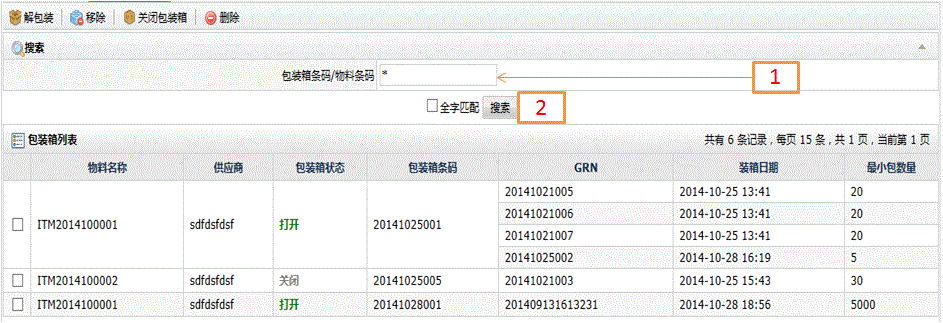
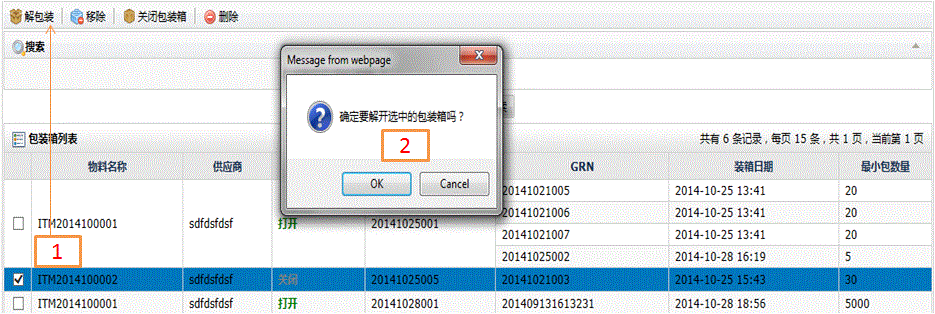
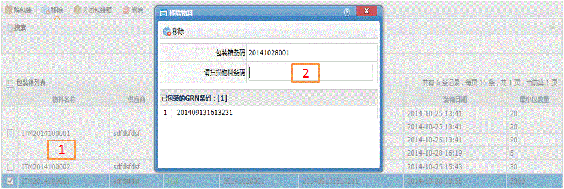
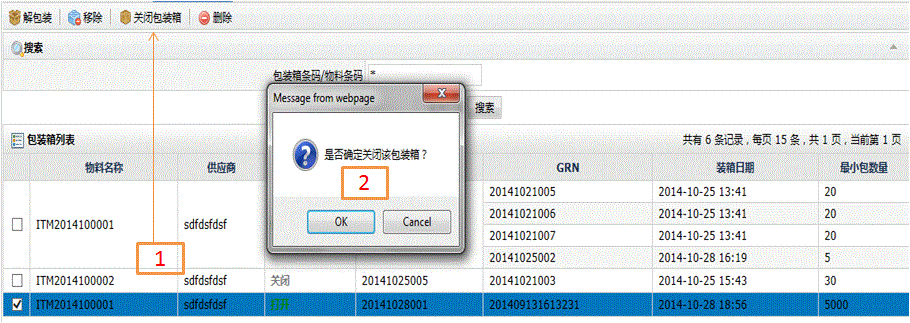
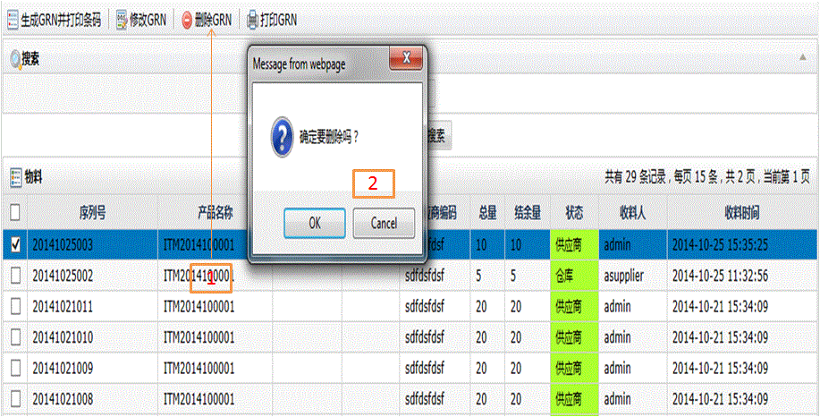

GRN包装箱
字段描述
字段名
描述
包装箱条码/物料条码
指可以扫描包装箱的条码，也可以扫描物料GRN条码
供应商编码
供应商代码
包装状态
打开：表示正在包装的状态；关闭：表示已经包装完的状态
包装条码
包装箱条码
GRN
包装在包装箱中的物料GRN
装箱日期
包装的日期
最小包装数量
指物料GRN的最小包装数
功能描述
可执行查询包装箱、解包装、关闭包装、从包装箱中移除GRN、删除包装箱功能
查询包装
1.在包装箱条码/物料条码中输入关键信息；
2.单击搜索后将查询出相关信息。

解包
1.在主页中选择要解包的箱号后单击工具栏中的解包按钮；
2.在弹出的确认窗口中选择确定解包还是取消解包即可。

移除
1.在主页中选择要移除的箱号后单击工具栏中的移除按钮；
2.系统弹出移除窗口，同时自动带出在选定箱号中对应所有包装的GRN；
3.在扫描物料条码中输入要从箱号中移除的物料GRN；
4.最后单击子窗口中的移除按钮完成移除操作。

关闭包装箱
1.在主页中选择要关闭的箱号后单击工具栏中的关闭包装箱按钮；
2.在弹出的确认窗口中选择确定关闭还是取消关闭即可。

删除
1.在主页中选择要删除的箱号后单击工具栏中的删除按钮；
2.在弹出的确认窗口中选择确定删除还是取消删除即可。
